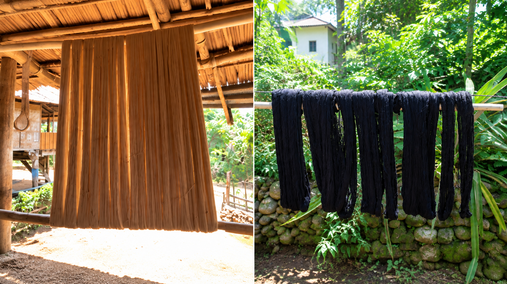
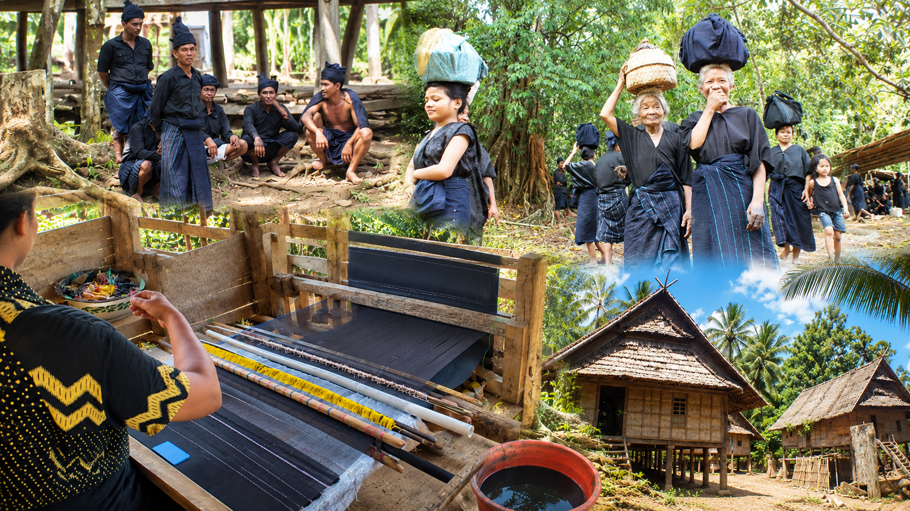
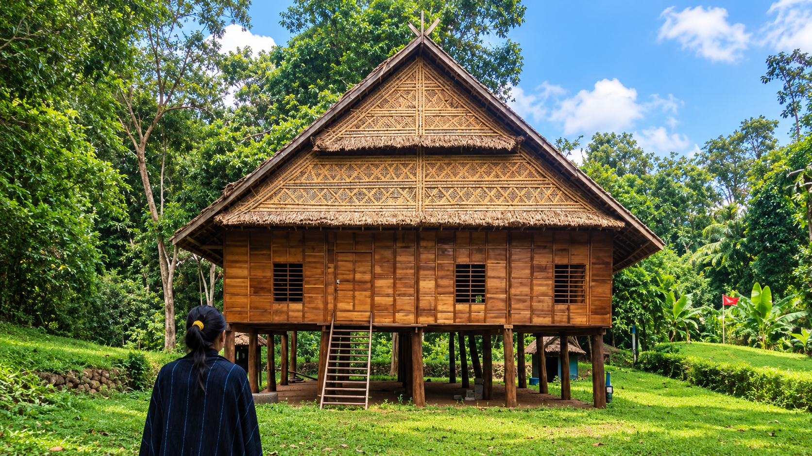
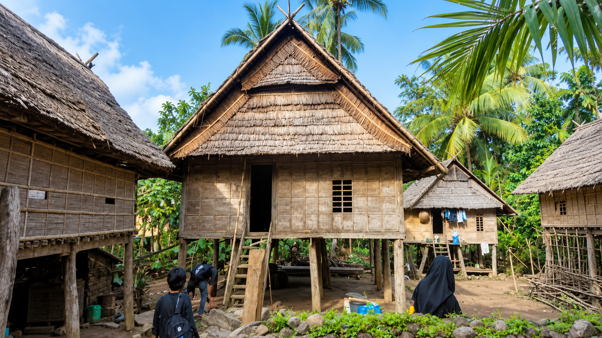
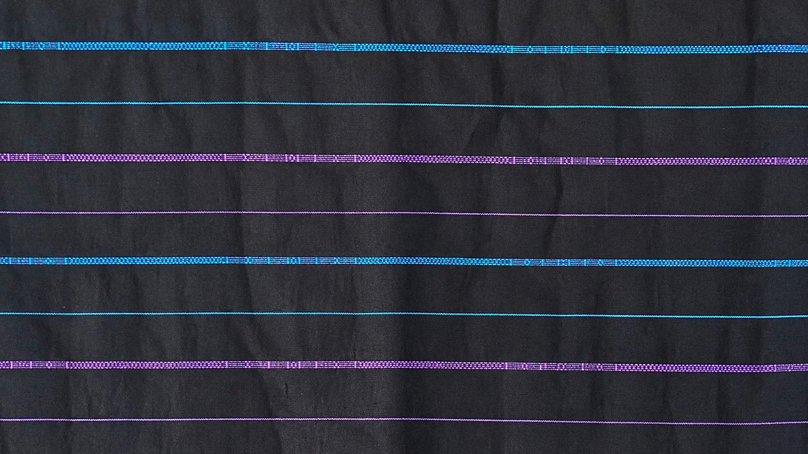

Dashboard
chevron_right
Materi Numerasi
menu_book Fase D · Numerasi
Materi Numerasi
Belajar matematika melalui kearifan budaya
Ammatoa Kajang — dari bilangan hingga peluang.
Semua Bab
Bilangan Real
Bilangan bulat, operasi
hitung, faktorisasi prima, dan jenis-jenis bilangan.

Bab
2
MENENGAH
Rasio & Perbandingan
Rasio, proporsi, skala peta,
laju perubahan, dan literasi finansial.
Pola & Aljabar
Pola bilangan, bentuk
aljabar, sifat komutatif, asosiatif, dan distributif.

Bab
4
MENENGAH
Relasi & Fungsi
Relasi himpunan, diagram
panah, diagram Cartesius, domain, kodomain, range, dan fungsi.

Bab
5
MENENGAH
Bangun Datar
Luas dan keliling berbagai
bangun datar serta penerapannya dalam kehidupan.

Bab
6
LANJUT
Bangun Ruang
Luas permukaan dan volume
prisma, tabung, bola, limas, dan kerucut.

Bab
7
MENENGAH
Geometri
Sudut, kekongruenan,
kesebangunan, Pythagoras, dan transformasi geometri.
Analisis Data & Peluang
Mean, median, modus, range,
peluang, frekuensi relatif, dan frekuensi harapan.
school Capaian Pembelajaran Fase D
Apa yang akan kamu capai?
Seluruh materi dirancang sesuai Capaian Pembelajaran
Numerasi Fase D Kurikulum Merdeka, mencakup Bilangan, Aljabar, Pengukuran & Geometri,
serta Analisis Data & Peluang.
museum Jelajahi Budaya
home Dashboard menu_book Materi fitness_center Latihan museum Budaya